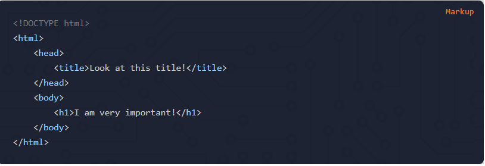

HTML Introduction
What is HTML? HTML is (Hyper Text Markup Language), to put it even more simply HTML is just another file type, like excel or "docs" that we use for the creating web pages on the internet. Lets begin.
What is HTML? HTML is (Hyper Text Markup Language), to put it even more simply HTML is just another file type, like excel or "docs" that we use for the creating web pages on the internet. Lets begin.
Creating a real HTML document requires the use of HTML tags. HTML tags are used to describe and give meaning to whatever content is inside the tag, which gives the page structure.
The body tag, on the other hand, is where the content you will see displayed on your screen resides. You need to put anything you want actually rendered on the page between the opening and closing body tags.
What is an "Element", and what is a "Tag"? Well actully they are the same thing, don't try and think about it too much. But the real differences are, a "Tag" referes to a specific type of element, like the "p" tag, but you can also just say the "p" element.
Attributes provide additional information about HTML elements.